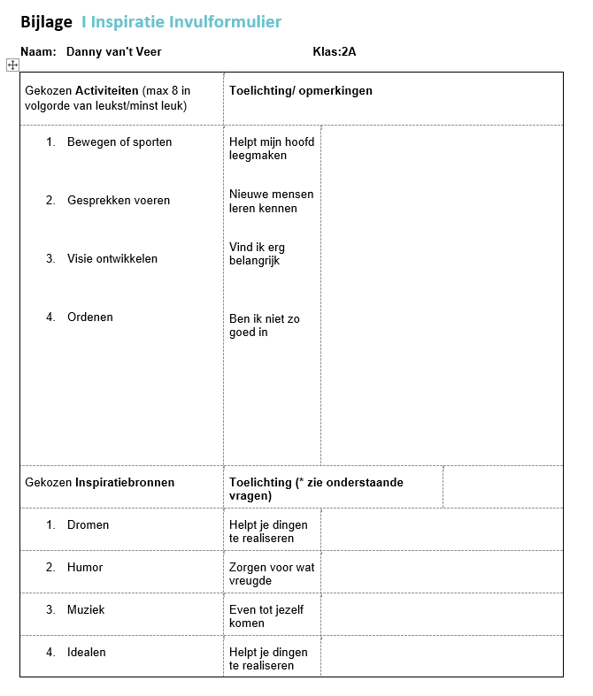
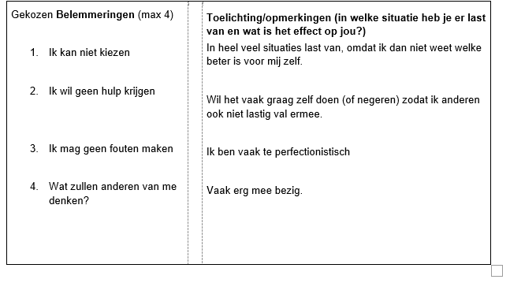

In week 1 ging het om Beachcamp met hieronder de reflectie:
Mijn positieve ervaring: Ik heb veel nieuwe mensen leren kennen en nieuwe vrienden gemaakt. Ik kan met trots zeggen dat ik goed heb kunnen surfen en meerdere golfen achter elkaar kon pakken
Mijn negatieve ervaring: De busreis was erg lang en erg onconfortabel. Ik had erg weinig beenruimte namelijk.
Tijdens het Inspiratiespel moesten we met elkaar in gesprek gaan over hetgeen dat ons inspireert en van binnenuit motiveert.
 De casus met als richtvraag "wat wil ik" ging pver het feit dat ik graag de Personal Trainingskant op wilde. Wij hebben hier met z'n allen aandachtig naar geluisterd en toen hebben wij behandeld over de stappen die genomen moesten worden, Zo ging het erover dat het doel er wel al was. Nu moesten alleen de verschillende obstakels nog geïdentificeerd worden. Na het overleggen van deze casus kwam er een duidelijk beeld van hoe ik nu verder moest als ik dit doel wil gaan bereiken.
Ik heb meegelopen bij mijn oude badminton club. Hier geven ze 1x per week les aan kinderen met beperking Ik heb deze doelgroep gekozen, omdat ik het erg interessant vind om te zien hoe de kinderen dit ervaren en hoeveel los ze hebben. De aangeboden activiteit was Badminton. We gingen leren slaan, serveren en smashen. Ik vond het erg leuk om mee te doen en om te zien hoe leuk de deelnemers het hadden. Ikzelf zou niks anders hebben gedaan aan de les. De kinderen deden nu wat ze wilden en konden. Als ik ze andere oefeningen zou hebben gegeven zou het misschien te moeilijk zijn geweest voor ze. Ik had geen negatieve ervaringen.
In deze week gingen wij met z'n allen lopen naar het Wedt. Onderweg hier naartoe kregen wij kaartjes met verschillende stellingen er op. Sommigen waren erg makkelijk zoals: "Wat is een mooi moment uit je leven?". Anderen gingen weer meer de diepte in:"Zou je dingen in je verleden anders hebben gedaan en waarom?". Aangekomen op het Wedt gingen we nogmeer de diepte in en mochten we elkaar ook vragen stellen heirover. Dit zorgde wel voor een soort band tussen elkaar. Uiteindelijk konden we door tijdsnood niet al te lang doorgaan, omdat het teruglopen naar school iets langer was dan we dachten.
In dit gesprek ging het vooral over hoe het er mij mij voorstond dit jaar en ook zeker vorig jaar. Vorig jaar ging het niet zo goed en heb ik wat punten laten liggen die ik nu snel wil behalen voor mijn Propedeuse. Ook ikzelf ben hard aan het werk om mijzelf weer wat lekker te laten voelen. Ik ben veel aan het sporten om zo even alles los te laten. Dit heb ik met Koen besproken en hoefde van hem vervolgens geen decaangesprek in te plannen.
Kraam 1: AZ
Deze persoon was van AZ. DIt is een grote voetbalclub en vond ik erg interessant dus. De werkzaamheden waren jeugdtrainen en ondersteunen van gezondheid. De student vond het leuk dat er allemaal sporters met een grote toekomst aanwezig waren, hierdoor was zijn beleving erg leuk. De mindere punten was dat het helpen trainen soms wel lastig was om het hoge niveau te halen wat ze vereisen. Vanuit de opleiding was er zeker genoeg aansluiting. De student heeft geleerd om ook langere trainingen dan 1 of 1,5 uur te geven. Ik zou mezelf hier eventueel ook zien kunnen werken ooit.
Deze persoon werkte mee als fysio. Ik koos voor deze omdat het bedrijf ook bij mij in de buurt gevestigd is. De werkzaamheden van de student waren vooral mensen begeleiden in hun herstel en het uitzoeken waar bepaalde klachten vandaan kwamen. De student vond de werkzaamheden een beetje leuk, omdat het niet precies is wat hij later wil gaan doen. Wel vond hij het heel erg interessant. Hij vond het namelijk minder leuk om veel bij mensen te moeten voelen waar ze last hadden. Vanuit de opleiding was er zeker voldoende aansluiting, doordat het lichaam goed wordt gegeven op school. De student heeft meegekregen dat er echt onwijs veel verschillende soorten klachten zijn en dat ze weer bij iedereen anders zijn, waar we het op school vaak over 1 casus hebben specifiek. Ik zou mezelf dit niet doen in de toekomst, omdat ik niet houdt van mensen aaraken en voelen in spieren e.d.
Deze persoon deed mee een bedrijf waar mensen met obesitas kwamen. Ik heb voor deze kraam gekomen, omdat ik het toch wel een interessant onderwerp vond, ookal hoef ik er zelf niks mee later. De werkzaamheden bestonden vooral uit het meten, wegen en trainen van de personen. De student vond de stage leuk, omdat het een erg speciale en interessante doelgroep is om te hebben en te bestuderen, hierom had hij eigenlijk geen minpunten. Vanuit de opleiding was er minder aansluiting, omdat wij het alleen hebben over voedsel en leefstijl en niet heel specifiek op mensen met veel overgewicht. Hij heeft meegekregen dat er veel verschillende soorten vormen van overgewicht waren en dat iedereen eigenlijk zijn/haar eigen reden heeft tot het hebben van overgewicht. Ik zou mezelf dit werk zeker niet zien doen, omdat mijn interesse op manier van werken hier niet ligt.
Voor de volgende vragen heb ik gebruik gemaakt van de 360 graden feedback: Deze komt uit het pdf en heb ik zo aangepast om een duidelijk beeld te krijgen van mijzelf.
Ik heb uiteindelijk 4 mensen gekozen: Een goede vriend van mij, mijn stagebegeleider, mijn moeder en een goede collega op werk. Ik heb ze allemaal verschillende vragen gesteld en daar is het volgende uit gekomen:
• Zijn mijn kernkwaliteiten functioneel tijdens een stressvol moment genoeg om te kunnen doorstaan?
Antwoord:
De kernkwaliteiten die ik vooral kreeg waren: Sociaal, harde werker en teamspeler. Om erachter te komen of ik stressbestendig ben, heb ik een situatie geschetst en deze versteld aan de ondervraagden. Er werd door iedereen verteld dat ze mij wel vaker in wat stressvolle momenten hebben gezien en dat ik er telkens goed mee omging. Doordat ik sociaal, een harde werker en een teamspeler ben, kan ik snel in creatieve en helpende oplossingen denken.
• Is de rol die ik in de stage speel, de rol die de deelnemers (de ondervraagde dus) mij hebben toebedacht?
Antwoord:
De rol die ik toebedacht heb gekregen, was mesnen netjes groeten bij binnenkomst, ze op hun gemakt te stellen en vervolgens te ondersteunen wanneer mogelijk terwijl ze aan het trainen met een daar werkende Personal Trainer. Ook kreeg ik als rol om zo nu en dan een paar oefeningen te doen en af en toe een halve training. Volgens de stagebegeleider vervulde ik mijn rol erg goed. Een verbeterpunt die ik heb is wel om iets meer uit mijn comfortzonde te stappen en iets soepeler te zijn in de omgang. Ik was het hier zeker mee eens; ik ben erg sociaal maar vindt het soms lastig om met nieuwe mensen hele gesprekken te hebben over wat ze bijvoorbeeld doen in het dagelijks leven. Hier wil ik dus zeker aan werken.
• Wat kan ik verbeteren aan mijn valkuilen om geen achterstanden te krijgen bij belangrijke situaties die baat hebben voor mijn toekomst?
Antwoord:
Een van mijn grootste valkuilen is uitstelgedrag. Hierdoor vergeet ik heel vaak van alles te regelen en bijvoorbeeld in te leveren omdat ik het te vaak uitstel. Uit de responses kwam om bijvoorbeeld te gaan plannen. Hierdoor komt er een duidelijk overzicht en kan ik gelijk zien wanneer er iets ingeleverd moet worden. Dit zal mijn overzicht en verbeteren waardoor ik ook sneller zou beginnen aan iets. Daarnaast moet ik gelijk aan het werk gaan wanneer ik de kans heb, zodat ik later minder hoef te doen. Ook moet ik gewoon echt uit mezelf gaan beginnen en tegen mijzelf zeggen dat het nu moet en er dan ook echt aan gaan. Wanneer ik dit verbeter zal dit zeker profijt gaan hebben.
• Voldoe ik aan mijn norm om iedereen met respect te behandelen en in goede banen samen te werken?
Antwoord:
Uit de gestelde vragen kwam alleen maar naar voren dat ik een erg sociale en vriendelijke jongen ben. Zij zien aan mij dat ik anderen altijd met respect behandel en probeer samen te werken op een manier waarop iedreen goed met elkaar om gaat. Dit zorgt voor een positieve sfeer en goede werkomgeving. Ook voelen anderen zich snel comfortabel bij mij. Door deze antwoorden weet ik zeker dat ik doe aan de norm die ik heb opgesteld.
Tijdens mijn pitch heb ik de volgende punten verteld: naam instelling en werkveld (branche), werkzaamheden en competenties, leerdoelen en reflectie en wat ik meeneem als Sportkundige. Ik doe mijn stage bij Beyond Personal Training & Recovery. Dit is een bedrijf dat zich richt op Personal Training. De mensen die hier vooral komen zijn mensen met een belangrijke functie en/of weinig tijd om te sporten. Ze komen naar deze plek toe en sporten samen met mij en een Personal Trainer. De Trainer bedenkt oefeningen uit zijn hoofd of volgens een schema afgesteld op de wensen van de cliënt. Mijn leerdoel was om uit mijn comfortzone te stappen en wat vaker het gesprek aan te gaan met de cliënt. Reflecterend daarop is het mij zeker gelukt. Ik probeerde telkens een nieuw onderwerp te verzinnen waarover ik kon praten met de cliënt. Dit hiel mij ook erg om mij op m'n gemak te stellen en zo wat soepeler in de omgang te zijn. Wat ik meeneem als Sportkundige is dat ieder persoon anders is en dat het heel belangrijk is om daar op in te spelen. Iedereen heeft namelijk andere doelen en is anders in de omgang.
Mijn belangrijkste normen en waarden zijn respect en vriendelijkheid. Dit is zo, omdat ik vind dat je altijd op deze manier met mensen om hoort te gaan. Wat mij uniek maakt, is dat ik altijd deze normen en waarden volg. Ik wil graag dat anderen mij zo ook zien. Ik wil altijd overkomen als een gezellige en hardwerkende jongen die beleefd is tegen iedereen. Mijn passie ligt echt in de sport. Ik houd er van om elke dag de hele dag ermee bezig te zijn, omdat het mij echt heel gelukkig en voldaan maakt. Ook hier gelden dezelfde normen en waarden als die ik eerder genoemd heb. Ook probeer ik mijzelf scherp te houden voor mijn merk.